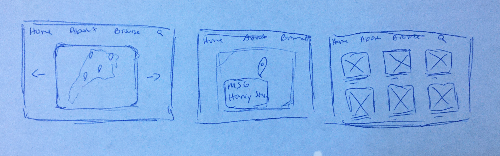

NYC Concerts 2020
Studio: Students apply their knowledge in prototyping and user research to web-based products that is primarily used in a browser/desktop environment. Responsiveness and mobile aspects should of course be considered but as a complementary aspect.
